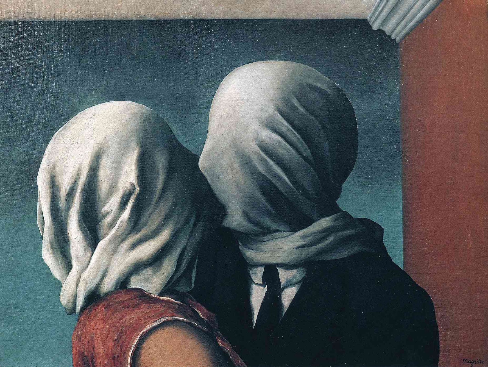

Art is my hobby
Post-Impressionism
VINCENT VAN GOGH
While Vincent van Gogh has found a significant amount of fame posthumously, his life was not as untroubled as his characteristically colorful canvases would suggest. From financial struggles to his failing mental health, Van Gogh faced many personal challenges during his career. In spite of this, he left behind a dazzling body of work—including landscapes, portraiture, and urban scenes—in an iconic style that is uniquely his own.
Surrealism
RENE MAGRITTE
As a pioneer of the Surrealist art movement, René Magritte created work that celebrated the subconscious mind and the world of dreams. Throughout his long career, he produced paintings that blurred the line between reality and fantasy and invited the viewer to question what they thought they knew.
SALVADOR DALI
Few artists are as visually iconic as Salvador Dalí. Although he explored a variety of mediums during his lifetime, including sculpture, printmaking, fashion, writing, and even filmmaking, Dalí’s paintings stand out as particularly epochal. In particular, the artist developed his own visual language for depicting his own inner world, dreams, and hallucinations.